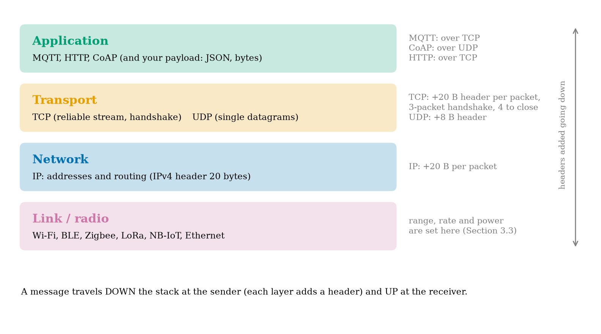
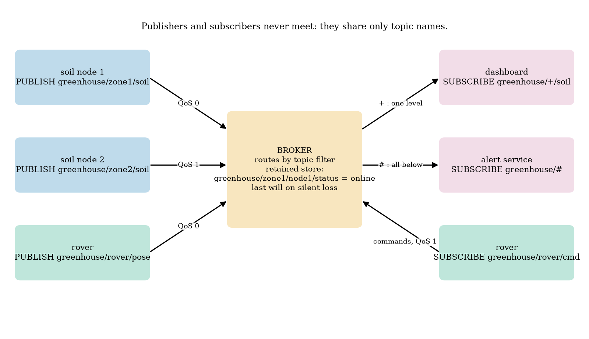
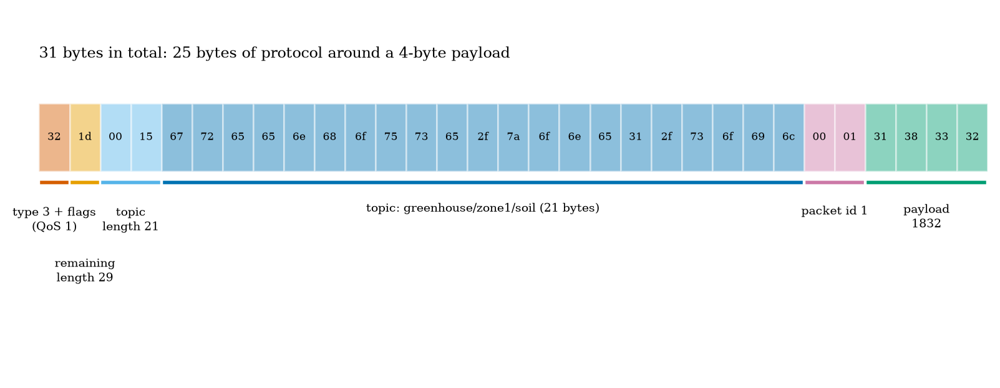
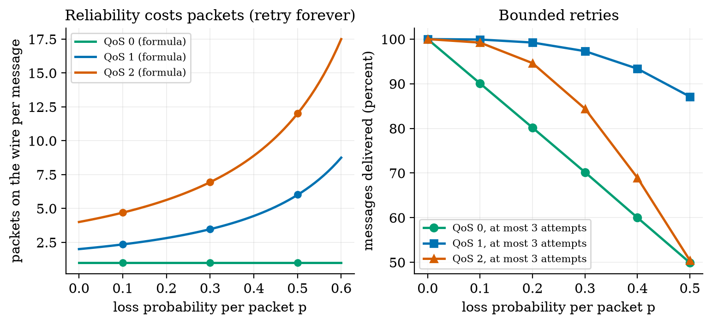
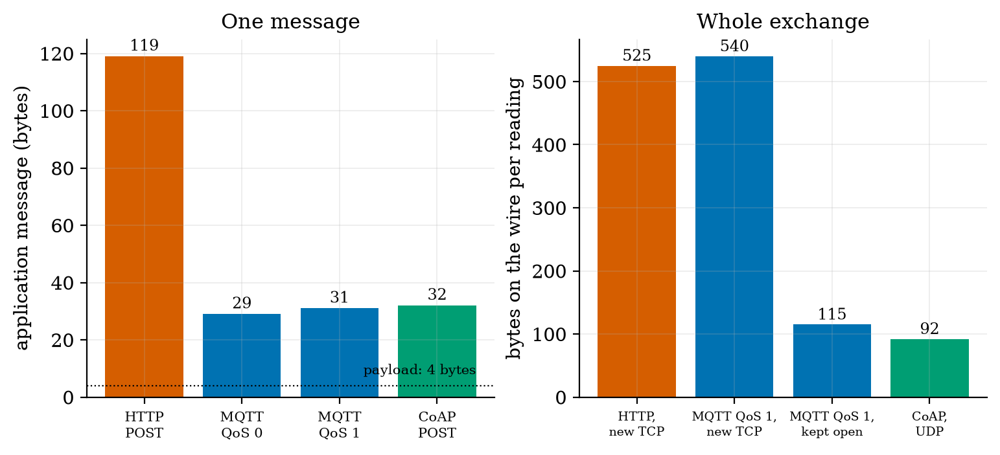
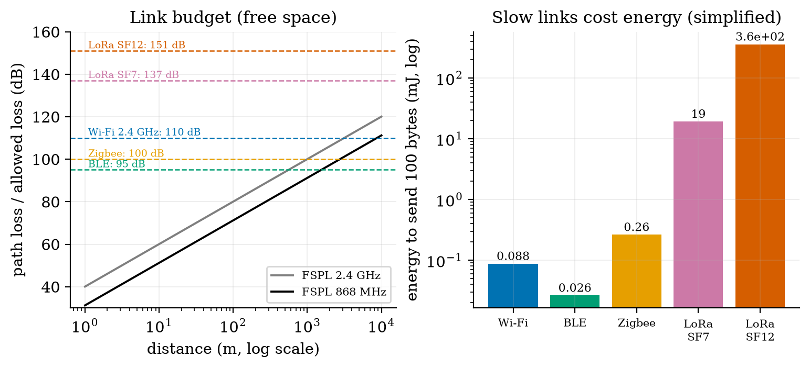

Unit 5 ready
Networking and IoT Communication Protocols: From Radio to MQTT
Radios and link budgets, HTTP versus MQTT versus CoAP, and a home-made MQTT broker checked against real ones.
Session map
After this session you can:
- place Wi-Fi, BLE, Zigbee, LoRa and NB-IoT by range, data rate and power, and compute a free-space link budget;
- say what each of IP, TCP, UDP, HTTP, MQTT and CoAP adds to a message, and count the bytes and round trips needed to send one sensor reading with each;
- explain MQTT: broker, topics, the
+and#wildcards, QoS 0/1/2, retained messages, last will and keep-alive, and write a PUBLISH packet byte by byte; - derive the expected number of packets and duplicates of each QoS level under packet loss, and see why QoS 2 with bounded retries can deliver less than QoS 1;
- run and read a conformance check of a home-made MQTT broker and client against two independent implementations (paho-mqtt and amqtt), including what they disagree about.
- Prerequisites: Unit 4 (state machine, retries, the node’s cycle), Unit 2 (RC rise time, decibel-free arithmetic), Unit 3 (aliasing is not needed). Logarithms (decibels are defined in Section 3.4.2).
- Difficulty ladder used: easy → medium → medium-hard → hard (Sections 3.1 to 3.4); the hardest tier is posed as open questions in Section 3.5.
- Deliverables: this document (.tex, .pdf, .docx), 6 figures, the module
codes/net/mqtt_mini/(mqtt_proto.pypacket codec and topic matching,broker.py,client.py,netcalc.pysize, link-budget and QoS calculators,conformance.py; 10 tests), and the conformance logconformance_log.txt(17 of 17 checks). - Source anchors: the MQTT 3.1.1 specification (OASIS, 2014), https://docs.oasis-open.org/mqtt/mqtt/v3.1.1/os/mqtt-v3.1.1-os.html, fetched and read on 2026-10-11 for four statements: Section 2.2.3 Table 2.4 (the remaining-length field and its byte ranges), Section 3.8.4 (the delivery QoS “MUST be the minimum of the QoS of the originally published message and the maximum QoS granted by the Server”), Section 4.7.1.2 (
#also matches the parent level) and Section 4.7.2 requirement [MQTT-4.7.2-1] (a server must not match topic names beginning with$against filters beginning with a wildcard). The CoAP byte layout is written from memory of RFC 7252 and is unverified; it is used only to estimate sizes. The radio powers, sensitivities, data rates, currents, the 40 ms round-trip time and the packet-loss values are assumed typical numbers, not measurements. The wire-size model is simplified (Section 3.4.1).
1. Terms: the term tree
| Term | Symbol | One-line meaning | Where it appears | New / known |
|---|---|---|---|---|
| protocol | an agreed format and set of rules for messages between two parties | 2 | new | |
| packet and header | a unit of data sent over a network, with a header that says where it goes | 3.1 | new | |
| IP address | the number that names a device on a network | 3.1 | new | |
| TCP | reliable, ordered byte stream between two endpoints, set up by a handshake | 3.2 | new | |
| UDP | single unreliable datagrams with no handshake | 3.2 | new | |
| round-trip time | RTT | time for a message to reach the other end and the reply to come back | 3.2 | new |
| HTTP | request/response protocol of the web, over TCP | 3.2 | new | |
| CoAP | small request/response protocol for constrained devices, over UDP | 3.2 | new | |
| publish/subscribe | senders publish to named topics; receivers subscribe to topics; neither knows the other | 3.1 | new | |
| MQTT | a publish/subscribe protocol over TCP with very small headers | 3.2 | new | |
| broker | the server that receives published messages and forwards them to subscribers | 3.1 | new | |
| topic and topic filter | a slash-separated name for a message stream, and a pattern that selects topics | 3.3 | new | |
| wildcard | +, # |
+ matches one topic level; # matches all remaining levels |
3.3 | new |
| QoS (quality of service) | the delivery guarantee of an MQTT message: 0, 1 or 2 | 3.3 | new | |
| retained message | the last message on a topic, kept by the broker and given to new subscribers | 3.3 | new | |
| last will | a message the broker publishes if a client vanishes without saying goodbye | 3.3 | new | |
| keep-alive | the longest silence a client may keep before the broker treats it as gone | 3.3 | new | |
| packet identifier | a number that pairs a message with its acknowledgement | 3.3 | new | |
| duplicate delivery | the same message reaching the receiver more than once | 3.3 | new | |
| free-space path loss | FSPL | signal power lost over a distance in empty space, in dB | 3.4 | new |
| link budget | transmit power minus receiver sensitivity: the path loss a link can tolerate | 3.4 | new | |
| receiver sensitivity | the weakest signal a receiver can still decode | 3.4 | new | |
| decibel | dB | ten times the base-10 logarithm of a power ratio | 3.4 | new |
| Wi-Fi, BLE, Zigbee, LoRa, NB-IoT | radio technologies compared in Section 3.4 | 3.4 | new |
Terms used but not taught here: TLS (named only, Unit 7), JSON and CBOR payloads (Unit 6), MQTT-SN and mesh routing (named only), DNS and DHCP (named only).
2. Remember
A protocol is an agreement on how to format and sequence messages. Data on a network travels in packets: a header (who sent it, who it is for, how long it is) followed by the data. Protocols are stacked in layers, each wrapping the one above in its own header (Figure 1): the link layer moves bits over a radio or wire (Wi-Fi, BLE, Ethernet); the network layer (IP, with an IP address per device) routes packets between networks; the transport layer (TCP or UDP) turns packets into a usable service; the application layer (HTTP, MQTT, CoAP) is what your program speaks.
TCP gives a reliable, ordered stream: before any data, the two ends exchange three packets (a handshake), lost packets are re-sent automatically, and closing takes another four. UDP just sends a packet: no handshake, no guarantee, and only 8 bytes of header.
HTTP is the web’s request/response protocol: text headers, easy to debug, large (over a hundred bytes of header for a tiny reading). MQTT is a publish/subscribe protocol: devices publish to named topics on a broker, others subscribe by topic, and the two sides never need to know each other. Its packets are tiny (a 2-byte fixed header). CoAP is a small request/response protocol over UDP for constrained devices.
Memory hooks.
- HTTP is a letter, MQTT is a telegram, CoAP is a postcard. All three carry the same four digits; they differ in how much paper surrounds them.
- A broker is a post office with a sorting rule: you hand in a message with a topic; it delivers copies to everyone who asked for that topic.
- QoS 0 = shout, QoS 1 = shout until you hear “OK” (you may be heard twice), QoS 2 = a four-step handshake so you are heard exactly once.
- A last will is a message left with a friend, to be read out if you do not come back.
Before you read on: three predictions (answers in Section 10).
- A sensor reading is four bytes (“1832”). Sent as an HTTP POST it needs about how many bytes at the application layer: 10, 40 or over 100? And as an MQTT PUBLISH?
- Over a link that loses 30% of packets, with retries until acknowledged, how many packets does one QoS 1 message take on average: 2, about 3.5 or about 10?
- Is a LoRa link that reaches kilometres also cheap in energy per message?
Recall quiz (answers in Section 10).
- Name the four layers in order from the application down to the radio.
- What does the
+wildcard match, and what does#match? - What is a retained message for?
- When does a broker publish a client’s last will?
- Why can a sleeping battery node not benefit from a long-lived MQTT connection?
3. Understand: the derivation
3.1 Tier 1 (easy): intuition and a picture
Figure 1 shows the layers a reading passes through. The soil node’s four-byte reading starts in the application layer, is wrapped by MQTT, then by TCP, then by IP, and finally is sent as radio bits; at the broker the wrappers are removed in the opposite order. Every wrapper adds bytes. For a four-byte reading, the wrappers are bigger than the reading by a factor of ten to a hundred, which is why the choice of protocol matters for a battery node.

The shape of MQTT is in Figure 2. In the usual request/response style (HTTP), the sender must know the receiver’s address and wait for it. In publish/subscribe, a sender publishes a message to a named topic at a broker, and any number of receivers have subscribed to topics they care about; the broker forwards. The soil node does not know the dashboard exists; the dashboard does not know there are two nodes. A new alert service can be added by subscribing, with no change to anything else. That decoupling is the reason MQTT is so common in IoT.

3.2 Tier 2 (medium): the definitions made precise
3.2.1 Why TCP costs round trips
A TCP connection starts with a three-packet handshake (SYN, SYN-ACK, ACK): the client cannot send data until the server’s reply returns, so a connection costs one round trip time (RTT) before the first data byte. HTTP on a fresh connection then needs one more RTT for the request and response: 2 RTT. MQTT on a fresh connection needs one RTT for TCP, one for CONNECT and CONNACK, and one for PUBLISH and its acknowledgement: 3 RTT. CoAP over UDP has no handshake: 1 RTT. With an assumed RTT of 40 ms these are 80, 120 and 40 ms. (Adding TLS encryption, Unit 7, costs more round trips and kilobytes of certificates; that is not included in any number below.)
3.2.2 What MQTT adds
An MQTT session has a few parts, each defined in Section 3.3: a client connects to a broker (CONNECT/CONNACK), publishes messages (PUBLISH) to topics at one of three QoS levels, subscribes with topic filters that may contain wildcards (SUBSCRIBE/SUBACK), may ask the broker to keep the last message of a topic (retained), may leave a last will, and promises to speak at least once per keep-alive interval (PINGREQ/PINGRESP if idle). The broker is a program; our course builds one (broker.py, 150 lines) and checks it against other people’s.
3.3 Tier 3 (medium-hard): MQTT from the bytes up
3.3.1 The packet format and the remaining-length field
Every MQTT packet begins with a fixed header: one byte whose high four bits are the packet type (CONNECT 1, CONNACK 2, PUBLISH 3, PUBACK 4, PUBREC 5, PUBREL 6, PUBCOMP 7, SUBSCRIBE 8, SUBACK 9, UNSUBSCRIBE 10, UNSUBACK 11, PINGREQ 12, PINGRESP 13, DISCONNECT 14) and whose low four bits are flags; then the remaining length (the number of bytes after the fixed header), encoded as a variable-length integer. The encoding uses seven bits of each byte for the value and the eighth bit to say “another byte follows”, least significant group first: with n the value, n=\sum_{i=0}^{k-1}d_i\,128^i,\qquad d_i\in[0,127],\ \text{byte}_i=d_i+128\cdot[i<k-1],\quad k\le4. \tag{1} Small packets cost one byte; the largest value, 128^4-1=268{,}435{,}455, needs four. Table 2.4 of the specification lists the boundaries, and our encoder reproduces every one of them (tests): 127 is 7f; 128 is 80 01; 16,383 is ff 7f; 16,384 is 80 80 01; 2,097,151 is ff ff 7f; 2,097,152 is 80 80 80 01; and 268,435,455 is ff ff ff 7f. A value above 268,435,455, or a fifth continuation byte on the wire, is rejected as malformed.
3.3.2 One PUBLISH, byte by byte
Take topic greenhouse/zone1/soil (21 characters), payload 1832 and QoS 1. A PUBLISH has the fixed header (type 3, flags: duplicate flag 0, QoS in bits 2 and 1, retain flag 0, so the byte is 0x32), the remaining length, a two-byte topic length, the topic, a two-byte packet identifier (present only for QoS above 0) and the payload. The remaining length is 2+21+2+4=29=\mathtt{0x1d}, and the whole packet is 1+1+29=31 bytes (Figure 3): 32 1d 00 15 + the 21 topic bytes + 00 01 + 31 38 33 32. At QoS 0 the packet identifier is absent: 29 bytes. Of the 31 bytes, 25 are protocol and 4 are data, and 21 of the 25 are the topic name, which is the best argument for short topic names on a constrained link.

3.3.3 Topics, wildcards and matching
A topic is a string of levels separated by /. A topic filter may contain two wildcards: + matches exactly one level (which may be empty), # matches any number of levels including the parent level itself (and must be the last character). Specification Section 4.7.1.2 says sport/# “also matches the singular sport”. A topic that starts with $ (reserved for the broker’s own information) is never matched by a filter that starts with + or # (requirement [MQTT-4.7.2-1]). The module’s topic_matches implements these rules; its test table includes: greenhouse/+/soil matches greenhouse/zone1/soil but not greenhouse/zone1/sub/soil; sport/tennis/player1/# matches sport/tennis/player1 and sport/tennis/player1/ranking/x; # matches a/b/c but not $SYS/broker; +/+ matches /finance (two levels, the first empty) while + alone does not. Topic design is data modelling: greenhouse/<zone>/<quantity> lets a dashboard subscribe to greenhouse/+/soil for all zones, and an alert service to greenhouse/#.
3.3.4 QoS: the cost of a guarantee
MQTT has three delivery levels, each a small protocol of its own.
- QoS 0 (at most once). PUBLISH is sent once, no acknowledgement. If a packet is lost, the message is lost.
- QoS 1 (at least once). The sender keeps the message until it receives PUBACK (carrying the packet identifier) and re-sends it with the duplicate flag if it does not; the message can arrive more than once.
- QoS 2 (exactly once). Four packets: PUBLISH, PUBREC (“received, stored”), PUBREL (“release”), PUBCOMP (“complete”). The receiver stores the message under the packet identifier and delivers it to the application only when it sees PUBREL, so a repeated PUBLISH or PUBREL does not deliver twice.
The delivered QoS to a subscriber is \min(\text{published},\text{granted}) (Section 3.8.4). Now cost. Suppose each packet is lost independently with probability p and the sender repeats a step until its acknowledgement arrives. A round of QoS 1 succeeds when both the PUBLISH and the PUBACK get through, with probability q=(1-p)^2, so the expected number of PUBLISH transmissions is 1/q=1/(1-p)^2 (a geometric distribution). The PUBLISH reaches the receiver in a fraction (1-p) of these, so the PUBACKs sent number 1/(1-p) on average. The expected packets on the wire (both directions) are N_1=\frac{1}{(1-p)^2}+\frac{1}{1-p},\qquad N_2=2N_1,\qquad N_0=1. \tag{2} QoS 2 has two such steps, PUBLISH/PUBREC and PUBREL/PUBCOMP. The receiver sees the PUBLISH 1/(1-p) times on average; the first copy is the message and the rest are duplicates, so \text{duplicates (QoS 1)}=\frac{1}{1-p}-1=\frac{p}{1-p},\qquad\text{duplicates (QoS 2)}=0. \tag{3} We checked both against a simulation (40,000 messages per loss rate; Figure 6, left):
| loss p | N_0 | N_1 formula | N_1 simulated | N_2 formula | N_2 simulated | QoS 1 duplicates, formula | simulated |
|---|---|---|---|---|---|---|---|
| 0.0 | 1 | 2.00 | 2.00 | 4.00 | 4.00 | 0 | 0 |
| 0.1 | 1 | 2.35 | 2.34 | 4.69 | 4.69 | 0.111 | 0.110 |
| 0.3 | 1 | 3.47 | 3.47 | 6.94 | 6.91 | 0.429 | 0.428 |
| 0.5 | 1 | 6.00 | 6.01 | 12.00 | 12.00 | 1.000 | 1.005 |
Bounded retries. A battery node cannot retry forever (Unit 4). Suppose at most 3 attempts per step. The sender of QoS 1 stops early only after receiving PUBACK, which implies the message arrived, so the message is delivered unless all three PUBLISH packets are lost: P_1=1-p^3. QoS 0 delivers with probability 1-p. For QoS 2 the message is delivered only when the receiver has seen PUBREL, and that needs the first step (PUBLISH answered by PUBREC) to finish within 3 attempts, probability 1-(1-q)^3 with q=(1-p)^2, and then a PUBREL to arrive within 3 attempts, probability 1-p^3: P_0=1-p,\qquad P_1=1-p^3,\qquad P_2=\Big(1-\big(1-(1-p)^2\big)^3\Big)\big(1-p^3\big). \tag{4} At p=0.3: P_0=0.700, P_1=0.973, P_2=0.867\times0.973=0.844; the simulation gives 0.702, 0.973 and 0.844. At p=0.5: 0.500, 0.875 and 0.506 (simulated 0.500, 0.872, 0.506). QoS 2 with bounded retries delivers less than QoS 1 (Figure 6, right), because the sender can give up in the middle of the handshake and the receiver then never releases the message. “Exactly once” is a promise that holds only if both ends keep retrying (and remember state across reconnection, which our course broker does not do). For a node that sleeps, QoS 1 plus idempotent messages is usually the better engineering.

3.3.5 Retained messages, last will and keep-alive
A message published with the retain flag is stored by the broker, one per topic, and delivered (with the flag set) to every client that subscribes to a matching filter later; publishing an empty retained payload clears it. This gives a dashboard the last known value at once instead of waiting for the next report. A client may register a last will (a topic, payload, QoS and retain flag) in its CONNECT; the broker publishes it if the connection closes without a DISCONNECT packet, whether the cause is a crash, a dead battery or a network failure, and discards it after a clean DISCONNECT. The keep-alive interval tells the broker how long it may hear nothing: if it receives nothing for 1.5 times the interval it declares the client gone and publishes the will; an idle client sends PINGREQ and the broker answers PINGRESP. A common pattern combines the three on one status topic: on connect publish online (retained), and register a will that publishes offline (retained) on the same topic.
This pattern does not suit a node that sleeps. A deep-sleeping node closes the connection cleanly each cycle (no will) or, if it simply cuts the radio, looks like a crash (a false “offline” each minute). For such a node the dashboard should treat a missing reading as stale after, say, three reporting periods (Unit 6), and the will is useful only for always-on devices such as the rover.
3.4 Tier 4 (hard): bytes, round trips and radios
3.4.1 What one reading costs on the wire
We count the bytes for the reading 1832 (four payload bytes) sent to greenhouse/zone1/soil, with the simplified model: each application message is one IP packet with 40 bytes of IPv4+TCP header (28 for IPv4+UDP), a TCP handshake is 3 packets and a close 4, and there is no TLS, no TCP options and no link-layer framing (all of which would add bytes). Application layer, built by the module: an HTTP POST with minimal headers is 119 bytes (and a 46-byte response); an MQTT PUBLISH is 29 bytes at QoS 0 and 31 at QoS 1; a CoAP POST is 32 bytes (using the layout of Section 3.2.2, unverified against the RFC). Over the whole exchange (Figure 4, right; one reading per minute):
| exchange | bytes per reading | per day at 1 per minute | payload share |
|---|---|---|---|
| HTTP, new TCP connection each time | 525 | 756.0 kB | 0.76% |
| MQTT QoS 0, new connection each wake | 494 | 711.4 kB | 0.81% |
| MQTT QoS 1, new connection each wake | 540 | 777.6 kB | 0.74% |
| MQTT QoS 2, new connection each wake | 628 | 904.3 kB | 0.64% |
| MQTT QoS 1, connection kept open | 115 | 165.6 kB | 3.48% |
| MQTT QoS 0, connection kept open | 69 | 99.4 kB | 5.80% |
| CoAP confirmable over UDP | 92 | 132.5 kB | 4.35% |
Prediction 1 of Section 2: HTTP needs over a hundred bytes; MQTT about thirty. The table holds the less comfortable truth for battery nodes: MQTT is small per message, but a node that sleeps cannot keep the connection, so each report pays for the TCP handshake and the CONNECT (540 bytes, 3 RTT, 120 ms at 40 ms RTT), no better than HTTP’s 525 bytes and 2 RTT. The savings of MQTT appear when the connection stays open (115 bytes: a mains-powered rover, a gateway), or when a UDP protocol removes the handshake (CoAP: 92 bytes, 1 RTT). Hence the common architecture: sleeping sensors speak a connectionless protocol to a nearby gateway, which keeps one MQTT connection to the broker.

3.4.2 Radios: free-space loss and the link budget
A radio signal spreads out: the power at distance d from an isotropic transmitter is spread over a sphere of area 4\pi d^2, and a receiving antenna of effective area \lambda^2/4\pi catches a fraction of it, so the ratio of received to transmitted power is \big(\lambda/4\pi d\big)^2. The inverse, the free-space path loss, is (4\pi d/\lambda)^2=(4\pi df/c)^2 with c the speed of light. Engineers use decibels (dB), ten times the base-10 logarithm of a power ratio, so that multiplications become additions: \mathrm{FSPL}=20\log_{10}d+20\log_{10}f+20\log_{10}\frac{4\pi}{c}=20\log_{10}d+20\log_{10}f-147.55\ \text{dB}\quad(d\text{ in m},\ f\text{ in Hz}). \tag{5} Every doubling of the distance or the frequency adds 6 dB. At 2.4 GHz the loss is 74.0 dB at 50 m and 100.0 dB at 1 km; at 868 MHz, 65.2 dB at 50 m and 105.2 dB at 5 km (module fspl_db; the test checks 100.05 dB at 1 km, 2.4 GHz). A link works if the received power, transmit power minus path loss (with ideal 0 dBi antennas), is above the receiver sensitivity S. The link budget is therefore P_{tx}-S, the path loss the link can stand. With assumed typical values:
| technology | band | P_{tx} (dBm) | sensitivity (dBm) | nominal rate | link budget (dB) | energy for 100 bytes (mJ, simplified) |
|---|---|---|---|---|---|---|
| Wi-Fi | 2.4 GHz | 20 | -90 | 6 Mb/s | 110 | 0.088 |
| BLE | 2.4 GHz | 0 | -95 | 1 Mb/s | 95 | 0.026 |
| Zigbee | 2.4 GHz | 0 | -100 | 250 kb/s | 100 | 0.26 |
| LoRa SF7 | 868 MHz | 14 | -123 | 5.47 kb/s | 137 | 19 |
| LoRa SF12 | 868 MHz | 14 | -137 | 0.293 kb/s | 151 | 360 |
Reading the table (Figure 5). (i) Sensitivity and rate trade against each other: the LoRa budget is 27 to 41 dB larger than Wi-Fi’s because LoRa spends time (a slow bit) to gain signal margin; 41 dB is a factor of 12,000 in power. (ii) That time is energy: sending 100 bytes costs about 360 mJ in the slowest LoRa setting against 0.09 mJ for Wi-Fi, a factor of 4000. A long-range link is not a cheap link per message; a LoRa node sends rarely and little. Prediction 3 of Section 2: no. (iii) The free-space range at which the loss equals the budget is only a ceiling (3.1 km for Wi-Fi, 0.56 km for BLE, 0.99 km for Zigbee); indoors, walls, floors and multipath take tens of dB, so real ranges are far shorter, and for LoRa the free-space ceiling (hundreds of kilometres) is meaningless: terrain, the Earth’s curvature and noise decide.

Airtime is not where the node’s battery goes. In Unit 2 a Wi-Fi report cost 112.6 mA s per cycle, about 372 mJ at 3.3 V, against 0.09 mJ of airtime for 100 bytes: the cost is association, address assignment, TCP and MQTT handshakes and waiting for answers, not the bits. The simplified energy per byte in the table is a lower bound that matters most for slow links, where airtime does dominate.
3.4.3 Conformance: do our broker and client speak real MQTT?
A broker and client that were written together and tested only against each other prove only that they agree with each other. We therefore checked them against two independent implementations in a throwaway virtual environment (pip install paho-mqtt amqtt, versions 2.1.0 and 0.12.1; the script conformance.py, whose output is in conformance_log.txt).
Part A: paho-mqtt, a widely used client, against our broker (10 checks, all passed): CONNECT accepted; SUBACK granted QoS capped at 1 (our design choice, allowed by the specification, which lets a server grant a lower QoS); QoS 0, 1 and 2 publishes complete, including paho’s PUBREC/PUBREL/PUBCOMP exchange; a subscriber receives them at QoS 0, 1 and 1; + matches one level and # several; a retained message reaches a late subscriber with the retain flag and an empty retained payload clears it; a last will is published when the client’s socket vanishes and not after a clean DISCONNECT; and a 1 s keep-alive survives 3 s of silence by ping.
Part B: our client against amqtt, an independent broker (7 checks, all passed): CONNECT accepted; our SUBSCRIBE for QoS 2 granted 2; QoS 0, 1 and 2 publishes acknowledged and all three delivered back to us, including our inbound QoS 2 handshake; non-matching topics not delivered; a retained message carries the retain flag; the last will arrives; UNSUBSCRIBE stops delivery.
What the independent broker got wrong. Two observations in Part B were not our errors, and we checked each with paho as a third party. (1) amqtt delivered messages published at QoS 0 and 1 to a QoS 2 subscriber at QoS 2, where Section 3.8.4 requires the minimum, 0 and 1. (2) After one client had subscribed with a matching filter and received a retained message, a later client that subscribed to status/# was handed the retained message of greenhouse/zone5/node1/status, which does not match it; this reproduced with paho in the same order, and did not appear when the matching subscriber was absent. Our own broker follows the minimum rule and delivers retained messages only to matching filters (tests and Part A). Lesson: an “independent implementation” is evidence, not an oracle: the specification is the oracle, and a disagreement is resolved by reading it.
Limits of our broker (stated in the README). No persistent sessions; no authentication or TLS (Unit 7); no resend of unacknowledged QoS 1 messages to subscribers; subscriptions capped at QoS 1; no $SYS topics; one delivery per overlapping subscription. It is a teaching broker, not a replacement for Mosquitto.
3.5 Tier 5 (hardest): open questions
- What does TLS cost? A TLS handshake adds round trips and certificate bytes (kilobytes) to every fresh connection, which for a sleeping node can exceed the reading by a factor of a thousand. How would you keep a session alive across deep sleeps, and what are the security consequences (Unit 7)?
- Can a sleeping node use MQTT at all? MQTT-SN (a variant over UDP) and gateways exist for this. Design the message flow of a gateway that holds the MQTT connection for fifty sensors, and say what it must do about the last will of a node that is merely asleep.
- Are independent losses realistic? The QoS formulas assume each packet is lost independently. Wi-Fi losses come in bursts (interference, fading). Would bursty loss make retries more or less useful, and how would you measure it on a real network?
4. Apply
4.1 Worked problems
Problem 1 (remaining length). Encode 321 as an MQTT remaining length, and decode e9 07.
Solution. 321=2\cdot128+65: the low group is 65=\mathtt{0x41} with the continuation bit set: \mathtt{0xc1}; the next group is 2: so c1 02. Decode e9 07: \mathtt{0xe9}=233, continuation set, low 7 bits =105; next byte 7: 105+7\cdot128=1001.
Problem 2 (PUBLISH size). Topic farm/a/t (8 characters), payload 21.5 (4 bytes), QoS 0 and QoS 1. How many bytes?
Solution. Remaining length at QoS 0: 2+8+4=14 (so the fixed header is 2 bytes): total 16 bytes. At QoS 1: 2+8+2+4=16: total 18 bytes.
Problem 3 (topic matching). Which of farm/+/t, farm/#, +/a/#, farm/a match farm/a/t?
Solution. farm/+/t: yes. farm/#: yes. +/a/#: yes (+=farm, a, #=t). farm/a: no (a different number of levels).
Problem 4 (QoS cost). At 20% packet loss, what is the expected number of packets for one QoS 1 message with unlimited retries, and the duplicate fraction?
Solution. N_1=1/0.8^2+1/0.8=1.5625+1.25=2.8125; duplicates p/(1-p)=0.25 per message.
Problem 5 (link budget). A 2.4 GHz link has 0 dBm transmit power and -95 dBm sensitivity. What free-space distance does it reach?
Solution. Budget 95 dB: 20\log_{10}d=95-20\log_{10}(2.4\times10^9)+147.55=95-187.60+147.55=54.95, so d=10^{54.95/20}=560 m (the module’s max_range_m gives 0.56 km).
4.2 Code and figures
import asyncio
from broker import Broker
from client import MiniClient
async def demo():
b = await Broker().start() # our broker on a free local port
dash, node = MiniClient("dash", 30), MiniClient("node1", 30, will=("greenhouse/zone1/node1/status", b"offline", 1, True))
await dash.connect("127.0.0.1", b.port); await node.connect("127.0.0.1", b.port)
await dash.subscribe([("greenhouse/+/soil", 1)])
await node.publish("greenhouse/zone1/soil", b"1832", qos=1) # waits for PUBACK
print(await dash.get()) # {'topic': ..., 'payload': b'1832', 'qos': 1, ...}
node.abort() # vanish without DISCONNECT -> the will is published
await dash.disconnect(); await b.stop()
asyncio.run(demo())The module and README are in codes/net/mqtt_mini/. Its ten tests check: the remaining-length boundary values of the specification; packet round trips (CONNECT with will and credentials, PUBLISH with QoS 2 and retain, SUBSCRIBE, ping and disconnect bytes c0 00, d0 00, e0 00); the topic-matching table including the $ rule; end-to-end publish/subscribe with wildcards and unsubscribe; QoS 2 exactly-once delivery even if the PUBLISH is repeated; retained messages and their clearing; last will on a dropped connection and none after a clean disconnect; the keep-alive timeout publishing the will; a refused protocol level (CONNACK code 1); and the size, link-budget and QoS formulas against simulation. The conformance script is run separately because it needs the third-party libraries.
What would look different if the theory were wrong? If (2) were wrong, the simulated packet counts would not match the formula to 1% (they match to 0.01 to 0.03 packets). If (4) were wrong, the bounded-retry simulation would not give 0.973 and 0.844 at 30% loss; it does. If our broker were not MQTT, paho would fail in Part A; it passed all ten checks.
5. Analyze
Limits. At p=0 the three QoS levels cost 1, 2 and 4 packets; as p\to1 the retry-forever cost diverges as 1/(1-p)^2 (12 packets at p=0.5 for QoS 2, 17.5 at p=0.6). With bounded retries, delivery tends to 1-p^3 for QoS 1 and falls to zero as p\to1. Free-space loss grows without bound (6 dB per doubling) while real losses exceed it.
Dominance. For one reading from a sleeping node, connection set-up and tear-down (the TCP handshake, CONNECT, CONNACK, DISCONNECT and the close: 425 of the 540 bytes) dominate the bytes; the topic name (21 of the 31 PUBLISH bytes) dominates the message; and in Unit 2’s energy budget the connection setup, not the airtime, dominates the charge.
Order-of-magnitude estimate. Per-message overhead: a 4-byte reading in a 20-to-40-byte message in a 70-to-500-byte exchange: the useful fraction is 1 to 6 percent, whatever the protocol. This is why payloads are batched when latency allows (Unit 6).
Sensitivity. QoS 2 delivery with three attempts changes from 0.992 at p=0.1 to 0.844 at p=0.3 and 0.506 at p=0.5, while QoS 1 holds 0.999, 0.973, 0.875: the extra handshake is a liability when the link is bad and retries are few.
Failure modes. (1) A false “offline”: a will fired by a node that merely slept. (2) Duplicates at QoS 1: a command (“open the valve”) executed twice if it is not idempotent. (3) A topic with a wildcard in a PUBLISH (invalid; our broker closes the connection). (4) A retained message that lies: a retained online outliving a dead node unless a will clears it. (5) Over-trusting an independent implementation (Section 3.4.3). (6) Keep-alive longer than the network’s idle timeout: a router drops the TCP connection silently.
Items used from the pedagogy checklist: limits, dominance, estimate, sensitivity, failure modes, convergence (simulation against formula), invariants (QoS 2 never duplicates; round trips of every packet type), provenance (spec sections read; CoAP bytes not), and a priori versus a posteriori (the formulas predicted the simulations).
6. Evaluate
HTTP versus MQTT versus CoAP. HTTP is universal, easy to test with a browser and a firewall will pass it, at 119 bytes of application overhead and a TCP handshake per request; use it when a device talks to an existing web service rarely. MQTT is the right choice for many devices and many consumers, event distribution and last-value semantics, when the connection can stay open. CoAP suits a very constrained device and a request/response style over UDP, at the cost of fewer tools and less widespread infrastructure. None dominates: the table of Section 3.4.1 shows the choice depends on whether the node sleeps.
QoS choice. Use QoS 0 for data that is replaced within seconds (the rover’s pose at 10 Hz: an old pose is worthless, so a retry is wasteful); QoS 1 for readings and commands that must arrive, with idempotent handling of duplicates; QoS 2 almost never on a constrained device (Section 3.3.4).
Wi-Fi versus LoRa versus BLE. Wi-Fi: high rate, high power, existing infrastructure, good for the rover and mains-powered gateways. BLE: low power, short range, phones as gateways. Zigbee: low power with mesh routing. LoRa: very long range and very low data rate, for a few bytes per hour; cellular NB-IoT where there is no gateway and a subscription is acceptable. The greenhouse is 30 m across and has mains power at the gateway: Wi-Fi from node to gateway is adequate, and LoRa would be a poor fit (energy per message 4000 times higher).
Context. MQTT was designed in the late 1990s for monitoring oil pipelines over expensive satellite links (from memory, not verified here), hence its small headers and its last-will and retained-message features, and version 3.1.1 became an OASIS standard in 2014 (the specification we read); the layering of Section 3.1 is the Internet’s own. When NOT to use MQTT: a request that needs a direct, immediate answer (use HTTP or CoAP); a device that sleeps and cannot hold a connection (use a gateway or CoAP); a very large payload (use HTTP or object storage).
Honesty about this Unit’s numbers. The protocol logic, packet layouts, matching rules, the 17 conformance checks, the QoS formulas and their simulations are real and were run. The CoAP layout is unverified. The radio powers, sensitivities, rates, currents, the 40 ms round-trip time and the loss rates are assumed. The wire-size model omits TLS, TCP options, link-layer framing and DNS. The Wi-Fi association and address assignment, which dominate the real connect time, are not modelled.
7. Create
- Add persistent sessions to the broker (store QoS 1 messages for a disconnected, non-clean client, and resend on reconnection) and test it with paho.
- A wildcard fuzz test. Generate random topics and filters, compare
topic_matcheswith the specification’s rules written as a regular expression, and report any difference. - Measure your own network. Using the client, send 1000 QoS 0 messages to a local broker over Wi-Fi and count the loss; estimate p and use (2).
- A topic design. Design the topic tree for 5 zones with 4 sensors each, a rover and an alert service, and list which filters each consumer uses.
- Could become a package module:
iotrobotics.netwithmqtt_proto,Broker,MiniClient,netcalc, reused by the dashboard (Unit 6) and the rover (Units 9 to 12).
Running project, Layer 4: the communication design. Topics (short, hierarchical): readings greenhouse/<zone>/soil and greenhouse/<zone>/temp; status greenhouse/<zone>/<node>/status (retained; will offline for the always-on rover only); rover greenhouse/rover/pose (QoS 0, 10 Hz) and greenhouse/rover/cmd (QoS 1, commands written to be idempotent). The soil node publishes readings at QoS 1 because requirement R14 (99% delivery) cannot be met at QoS 0 for any loss above 1%, and QoS 1 with three attempts delivers 1-p^3 (99.9% at p=0.1). Updated requirements:
| id | requirement | status after Unit 5 |
|---|---|---|
| R1 | readings reported every 60 s | met by a QoS 1 PUBLISH every cycle: 31 bytes, 540 bytes on the wire with a fresh connection, about 778 kB per day per node |
| R14 | at least 99% of readings delivered | needs QoS 1 and at most 3 attempts: 99.9% at p=0.1, 97.3% at p=0.3 (1-p^3); QoS 0 gives only 90% at p=0.1 |
| R17 (new) | one reading takes at most 3 round trips of 40 ms to publish | 120 ms for MQTT on a fresh connection (3 RTT); a gateway holding the connection reduces it to 1 RTT |
| R18 (new) | the dashboard shows the last value at once and marks a silent node | retained last value for status topics; a node silent for three reporting periods is “stale” (Unit 6); no will for sleeping nodes |
| R2 | telemetry latency to the dashboard under 2 s | open: radio and broker latency are small (tens of ms) but Wi-Fi association (Unit 4’s 0.5 s) is assumed |
8. Visualization lesson
| Chart type | Best for | How it misleads | matplotlib call |
|---|---|---|---|
| layered stack diagram | structure that nests (protocol layers) | the boxes’ sizes imply sizes of headers; they are not to scale | FancyBboxPatch, ax.text |
| topology / flow diagram | who talks to whom (publish/subscribe) | arrows suggest a direct connection; here everything goes via the broker | FancyArrowPatch, ax.text |
| byte-field map (hex dump with labelled fields) | the layout of one packet | colours group fields; the sizes of the boxes are equal per byte, not per meaning | plt.Rectangle, ax.text |
| grouped bars of costs | comparing alternatives on one quantity | bars from zero are fair, but different panels use different scales (message vs exchange) | ax.bar(x, v) |
| threshold lines on a curve (link budget) | where a curve meets a limit | the crossing is a ceiling, not a prediction of real range | ax.axhline(y, ls="--"), ax.semilogx(...) |
| simulation markers over a formula line | showing that theory and simulation agree | agreement of a model with its own simulation proves the algebra, not the model | ax.plot(x, f), ax.plot(xs, ys, "o") |
| log-scale bar | quantities spanning orders of magnitude (energy per message) | the visual gap between bars is a ratio, not a difference | ax.set_yscale("log"), ax.bar(...) |
Reading Figure 3 as a chart. A byte map makes one fact visible that prose hides: 21 of the 31 bytes are the topic name. Figure 4’s two panels use different vertical scales on purpose (one message against a whole exchange); comparing across the panels would mislead.
9. Problem set
- (easy) How many bytes is an MQTT PUBLISH at QoS 0 with topic
a/band payload42? - (medium) A node sends a 6-byte reading every 30 s over a fresh MQTT QoS 1 connection with client id
n7and topicfarm/z2/soil. Use the module’swire_mqtt_freshto find the bytes per day. - (medium-hard) Derive the expected packets for QoS 1 when the sender gives up after M=3 attempts (not retrying forever) as a function of p, and evaluate it at p=0.3. Compare with 3.47 for unlimited retries.
- (hard) Show that for QoS 2 with at most 3 attempts per step the delivery probability is (1-(1-(1-p)^2)^3)(1-p^3) and find the loss rate at which QoS 2 delivers exactly 99% (solve numerically). How does it compare with QoS 1?
- (hardest) A fleet of 50 nodes each publishes once a minute over fresh connections. Compare the broker’s incoming bytes per day for a design with a gateway that keeps one MQTT connection and batches 50 readings per message (a 50-reading JSON batch is about 1 kB) against 50 separate connections. State your assumptions.
10. Retrieval practice and recap
Answers to the Section 2 predictions.
- Over a hundred (119 bytes for HTTP in our example); about thirty for MQTT (29 bytes at QoS 0, 31 at QoS 1).
- About 3.5 (3.47).
- No: a slow long-range link spends far more energy per message (about 360 mJ for 100 bytes at the slowest LoRa setting against 0.09 mJ for Wi-Fi, in our simplified model).
Answers to the Section 2 recall quiz.
- Application, transport, network (IP), link/radio.
+matches exactly one topic level;#matches all remaining levels (including the parent level).- To give a new subscriber the last known value of a topic immediately.
- When the connection closes without a DISCONNECT packet (crash, power loss, network failure, or keep-alive expiry after 1.5 times the interval).
- It spends almost all its time asleep with the radio off, so the TCP connection cannot be held and each report must reconnect.
Explain it to a friend.
- Why does MQTT need a broker in the middle, and what does that buy?
- Why can QoS 2 deliver fewer messages than QoS 1 when a sensor gives up after three tries?
- Why is a link that reaches kilometres not a link that is cheap to use?
Re-derive by hand tomorrow, without looking: (a) the variable-length encoding of 16,384; (b) the expected packets for QoS 1, 1/(1-p)^2+1/(1-p); (c) the free-space path loss 20\log_{10}d+20\log_{10}f-147.55 dB.
11. Where next
- Unit 6 looks at what the broker’s subscribers do with the data: payload formats (JSON against compact binary), time series, a dashboard with alerts, edge versus cloud processing, and anomaly detection, using this Unit’s broker as the transport.
- Terms named here but not taught: TLS (Unit 7), JSON and CBOR (Unit 6), MQTT-SN and mesh routing (named), DNS and DHCP (named). They are registered in CURRICULUM.md.
- Open threads: the CoAP byte layout is unverified against RFC 7252; the radio, round-trip and loss numbers are assumed; the real Wi-Fi connect time is unmeasured; the independent broker amqtt deviates from the specification in two ways (kept as a finding, not a defect of this course); our broker has no persistent sessions.